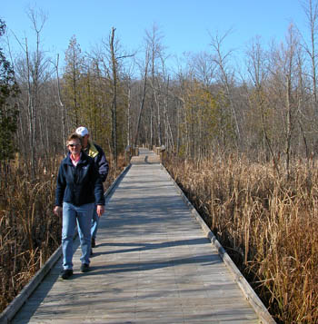
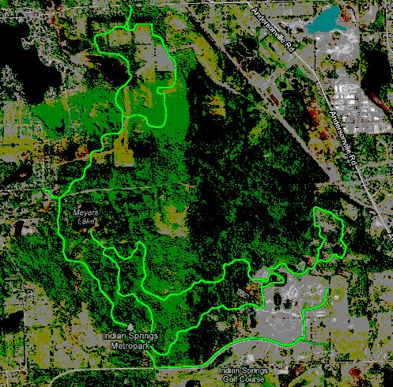

Home > Parks > White Lake >Indian Springs
Indian Springs has a somewhat unique feature of having many different paths.
The main one, (the paved one) is meant for biking. The others are unpaved. While technically meant for walkers, they make a good starting path for mountain bikers.
The paved course:
Is a relatively easy 12 mile round trip. It's paved and offers one big hill to start, after that relatively small hills. The video is below:
The Lakeview course:
Indian Springs has an actual name for it, but I've forgotten it and I always forget to take pictures of it. It's the longer of the two walking courses, and is the easier of the two. If you take the entire outer loop, you end up at a secluded very pretty lake.
The Farmland trail:
This is the other walking course, and that's actually it's name. It's fairly hilly, starting you off with a big one that it equally steep on the other side. Around it's ~1 mile course there are various farm implements, all old and authentic.
|

Above: Photos of the park. Most of these are taken by me.
Below: A screenshot of the Google maps bike overlay. These are trails I rode and tracked with a GPS, then went into Google and created the layer. Layers are not embeddable, so clicking on the link will take you to Google maps.

|